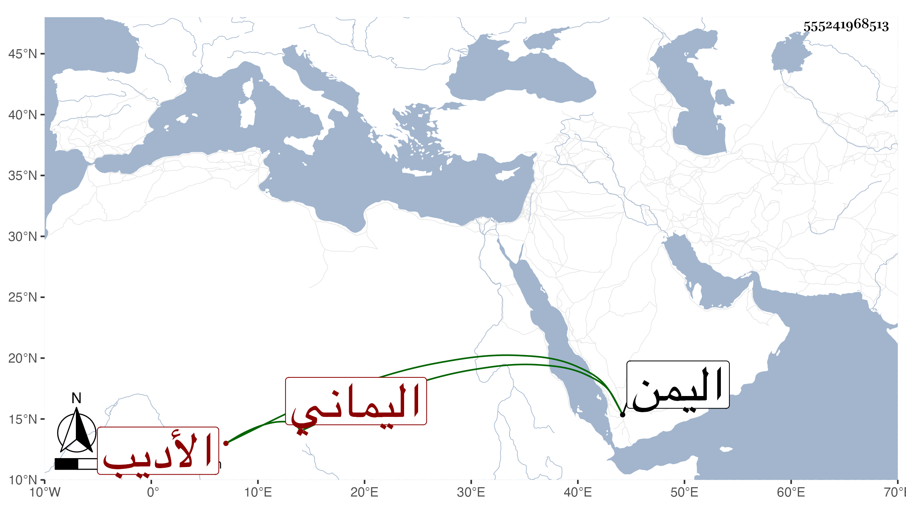

0902Sakhawi.DawLamic.ITO20230111-ara1.EIS1600.555241968513
Biography ID: 555241968513
أحمد بن أبي بكر بن معدان الشهاب أبو العباس اليماني الأديب صاحب الخط البديع والخلق الوسيع والمنصب الرفيع والعرض الوافر المنيع اشتغل بفنون الأدب واعتنى بمعرفة أنساب العرب وشارك في كثير من العلوم وبرز في المنثور والمنظوم فلذلك استقربه السلطان كاتب إنشاآته وأوحد جلسائه مع شرف النفس وعلو الهمة والكرم والحلم ثم انعزل وتقنع واشتغل بالحرث والزراعة وكان حيا في سنة ثمانمائة . ذكره الخزرجي في تاريخ اليمن وأثبته هنا لتجويز أن يكون تأخر لما بعدها .
